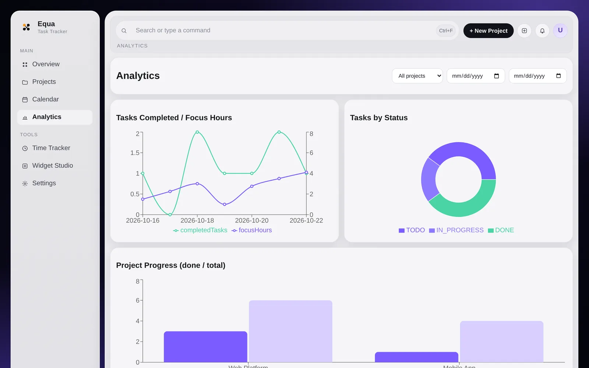
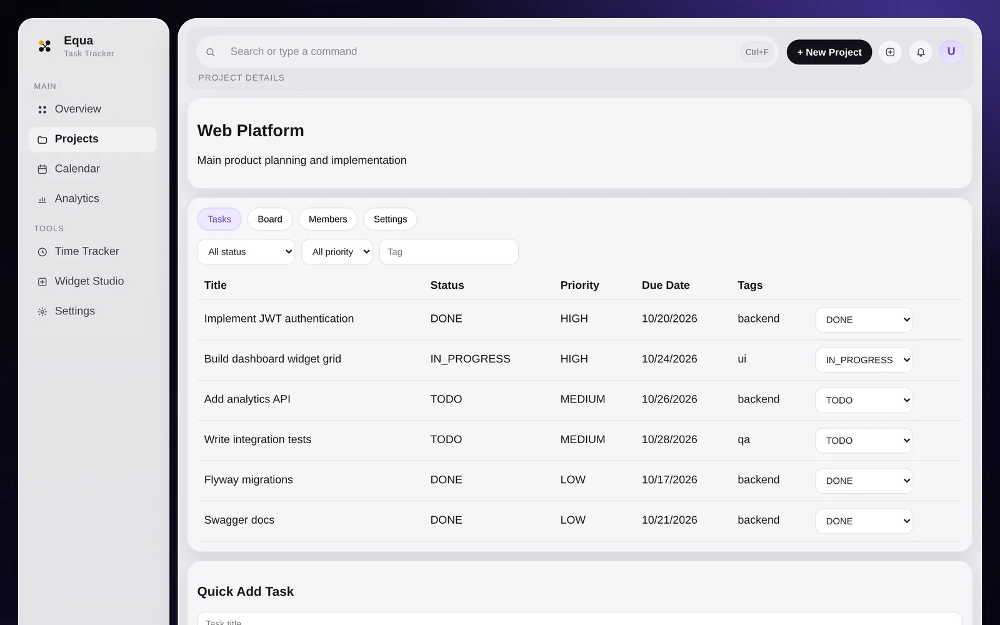

A full-stack workspace for projects, tasks, time tracking, analytics and customizable widgets, with a Spring Boot backend and a React frontend.
The problem
Tasks, time entries and project progress are easier to understand when they live in one place. The goal was a single workspace where planning, focus time and progress feed the same dashboard.
What I built
- JWT authentication plus CRUD APIs for projects, tasks, reminders and widgets — 35 endpoints documented with OpenAPI/Swagger.
- Seven React screens: overview, projects with task board, calendar, analytics, time tracker, widget studio and settings.
- Time tracking with an active-session model, and analytics endpoints for KPIs, productivity, status breakdown and project progress.
- A drag-and-resize widget grid with a template marketplace and a draft → validate → publish flow.
- Flyway migrations, H2 for local runs, PostgreSQL in Docker Compose, and integration tests for auth, projects and tasks.
How it works
- 1React + Vite interface
- 2REST API with JWT
- 3Spring services
- 4PostgreSQL via Flyway
Screens


Results
A complete, runnable application: one docker compose up starts PostgreSQL, the backend and the frontend. Stored “Java logic” in widgets is validated but never executed on the server, and “Generate with AI” is a rule-based UI mock.
What I learned
Designing the widget system taught me to keep extensibility safe: user-defined content is stored and validated, but the server never runs it.